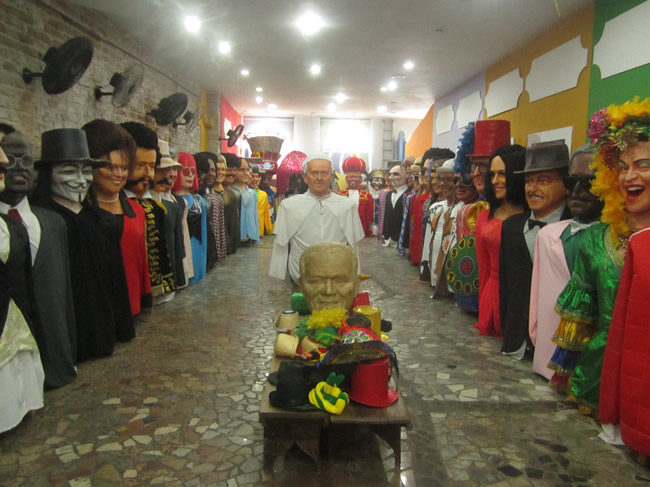
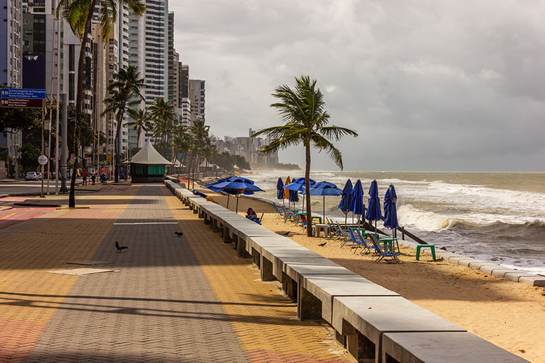

Embaixada dos Bonecos Gigantes
A EMBAIXADA DE PERNAMBUCO dos Bonecos Gigantes de Olinda surgiu da grande necessidade do turismo de Recife e Olinda de possuir um espaço cultural estruturado a receber turistas e recifenses para contemplar a grande magia da nova geração dos Bonecos Gigantes não só no carnaval, mas sim o ano inteiro.
Onde fica?
O espaço localizado na Rua do Bom Jesus 183, Recife Antigo (desde 31 de julho de 2009), abriga a exposição permanente de 63 bonecos gigantes, dentre os 300 existentes desta nova geração que materializa ícones como: Alceu Valença, Michael Jackson, Chacrinha, Ayrton Senna, Chico Science, Domiguinhos, Luíz Gonzaga, Rita Lee, Lampião, Tim Maia, Silvio Santos, Mauricio de Nassau, Papa Francisco, Cartola, Joaquim Barbosa, Lulu Santos, Elvis Presley, Pelé, Neymar entre outros, o espaço é pura magia.
Praia de Boa Viagem
A Praia de Boa Viagem é a praia urbana mais famosa da cidade do Recife, capital do estado brasileiro de Pernambuco. Com aproximadamente oito quilômetros (8 km) de extensão, está situada no bairro homônimo, Zona Sul da capital pernambucana, delimitada pela Praia do Pina ao norte e pela Praia de Piedade ao sul.
A maior parte da Praia de Boa Viagem é protegida por uma barreira de recifes naturais, que deu nome à cidade.No século XVII, a povoação da Boa Viagem servia de ponto de descanso dos viajantes que por ali transitavam vindos do sul da Capitania de Pernambuco. A praia tornou-se depois um local de veraneio para os recifenses, até a chegada dos edifícios nas décadas de 1940 e 1950. Tais edifícios beira-mar criam sombras sobre a praia, o que levanta críticas. A orla dispõe de parque, jardim e espaços de prática desportiva.
Na maré baixa formam-se várias piscinas naturais rasas, com águas mornas e transparentes, ao longo da praia. Também durante a maré baixa é possível andar sobre os recifes, que são relativamente planos e largos (mas escorregadios). Quando a maré sobe, os arrecifes ficam completamente cobertos pela água. Na Praia de Boa Viagem há quiosques padronizados, ciclovia, pista de cooper, chuveiros, quadras de vôlei e tênis e equipamentos para musculação.